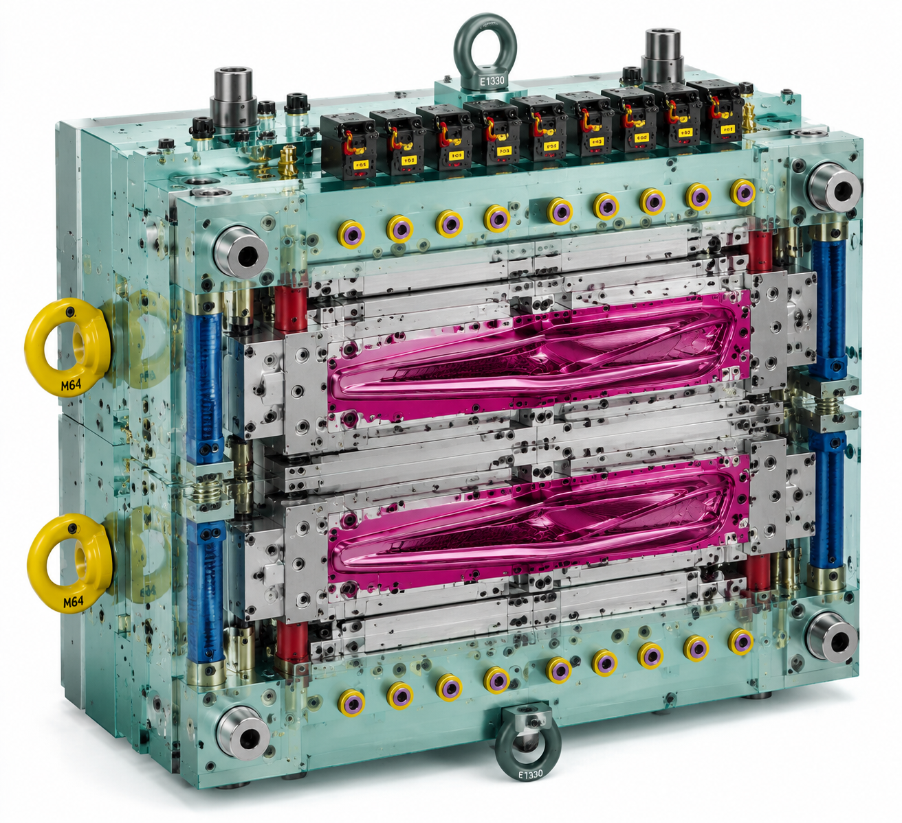
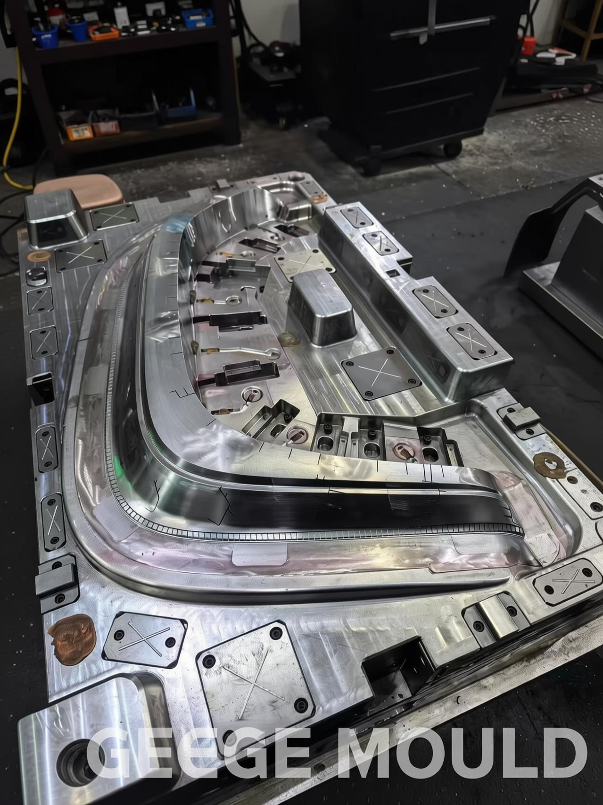
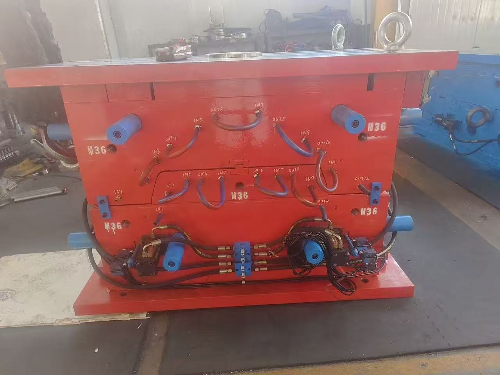
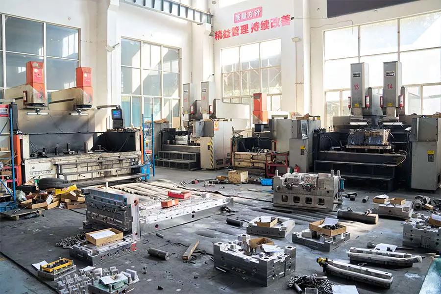
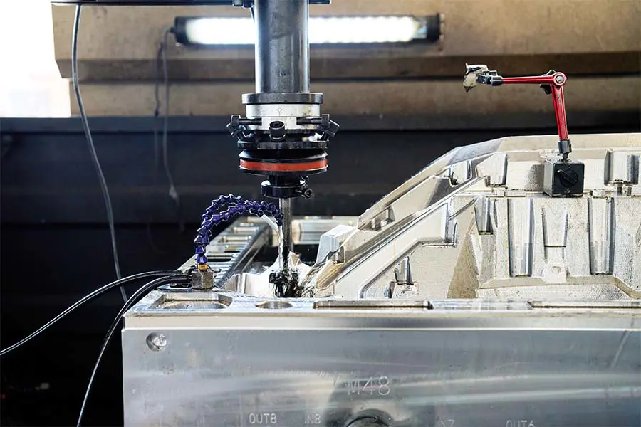
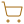

Our Capabilities
Complete mold engineering and manufacturing services — from DFM analysis and CAD/CAM/CAE design through precision CNC machining, injection molding production, and comprehensive quality assurance.
Core Technical Capabilities
- CAD/CAM/CAE & 3D solid modeling with full DFM analysis, mold flow simulation, and cooling channel optimization on every project.
- High-speed CNC + precision EDM for mold base and cavity machining to tight tolerances using high-grade steels (S136, 718H, NAK80, H13, P20).
- In-house tool tryouts with production-grade materials, T1 sample dimensional reporting, and complete inspection documentation.
Production & Process Capabilities
- Single-cavity, multi-cavity, and family mold configurations with hot-runner system integration from leading global suppliers.
- Engineering-grade thermoplastics including ABS, PP, PA6/PA66, PC, POM, PMMA, SMC/BMC, and high-temperature resins like PEEK and PPS.
- SPC-driven injection molding with process parameter documentation, PPAP support, and secondary finishing and assembly services.

Mold Design & Engineering
Great molds start with great engineering. Our design team uses industry-leading CAD/CAM/CAE software combined with 3D solid modeling to create mold designs that are optimized for manufacturability, durability, and part quality.
- Complete DFM (Design for Manufacturing) analysis on every project
- Mold flow simulation to optimize gate placement and predict fill patterns
- Cooling channel design for reduced cycle times and consistent part quality
- 3D solid modeling with full assembly verification before steel is cut
- Teamcenter-based engineering data and version management
- Shrinkage compensation, draft angle verification, and ejection analysis
We involve our customers throughout the design review process, sharing 3D models and simulation results so you can approve every detail before manufacturing begins.


Precision Tooling & Mold Making
With advanced CNC machining centers, high-precision EDM, and skilled toolmakers, we build injection molds that perform reliably in demanding production environments. Our in-house tooling capability gives us full control over quality and lead time.
- High-speed CNC milling and turning for mold base and cavity machining
- Wire-cut and sinker EDM for intricate geometries and fine details
- Surface grinding and polishing to specified finishes (SPI A1 through D3)
- Single-cavity, multi-cavity, and family mold configurations
- Hot-runner system integration (Yudo, Mold-Masters, Husky, and others)
- High-grade mold steels — S136, 718H, NAK80, H13, P20, and more
- Mold bases and components sourced to specified standards (HASCO, DME, LKM)
Every mold undergoes a rigorous in-house tryout and inspection process before shipment, with T1 sample reports provided for customer approval.







Injection Molding Production
Beyond mold making, we offer injection molding production services — from small pre-production validation runs through to ongoing serial production. Our production floor is organized for efficiency, traceability, and consistent quality.
- Production injection molding across a range of tonnages
- Engineering-grade and commodity thermoplastic processing
- Insert molding and overmolding capabilities
- In-mold decorating and labeling (IMD/IML) coordination
- Process parameter documentation and SPC (Statistical Process Control)
- First-article inspection (FAI) and PPAP documentation support
- Assembly, pad printing, and secondary finishing operations
Whether you need trial shots to validate a new mold or ongoing production volumes, we offer flexible programs tailored to your requirements.


Materials Expertise
We work with a comprehensive range of thermoplastics, engineering resins, and specialty compounds.
ABS
High impact resistance, dimensional stability, and versatile finishing — ideal for automotive interior and exterior trim components.
PP / PP-GF
Lightweight, chemical-resistant, and cost-effective for bumpers, door panels, and under-hood applications.
PA6 / PA66
Glass-fiber-reinforced nylons for high-strength functional parts, engine components, and structural brackets.
PC / PC-ABS
Excellent toughness and heat resistance for lamp housings, transparent covers, and demanding cosmetic parts.
POM
Low-friction acetal for precision gears, clips, and mechanical functional components requiring tight tolerances.
SMC / BMC
High-strength, heat-resistant thermoset composites for truck exterior panels, electrical enclosures, and structural industrial parts.
PMMA
Optical-grade acrylic for lamp lenses, transparent covers, and aesthetic components requiring excellent clarity.
High-Temp Resins
PEEK, PPS, PPA, and other high-performance polymers for extreme-duty under-hood and industrial applications.
Markets We Supply
Our molds and molded parts reach production lines around the world across these key industries.
Automotive & Heavy-Duty Truck
We specialize in automotive-grade injection molds — bumper molds, door panel molds, interior and exterior trim, lamp molds, and functional under-hood component tooling trusted by leading OEM brands.
Automotive Lighting & Optical
Injection molds for headlamps, tail lights, fog lamps, and full-width light bars — with optical-grade polished cavity surfaces and precise multi-point gating for ECE and SAE compliant beam patterns.
Industrial & Electrical
SMC compression molds and injection molds for electrical enclosures, switchgear housings, machinery covers, and structural industrial components requiring strength and durability.

Interior Trim & Body Panels
Door panels, dashboard carriers, center consoles, and exterior body panels — grained, textured, and Class-A surface finishes for visible automotive components across passenger and commercial vehicle platforms.